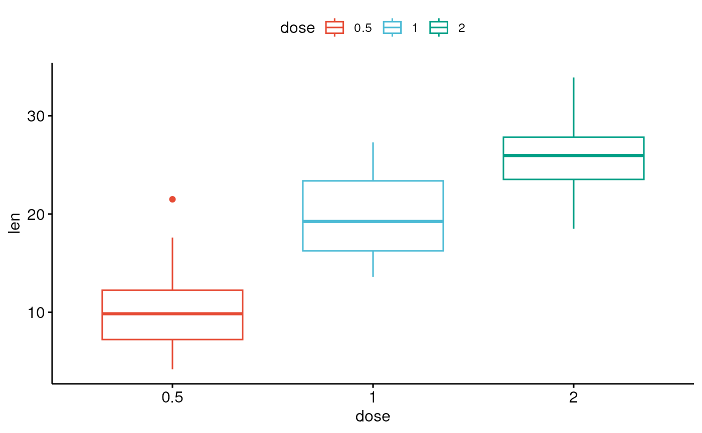
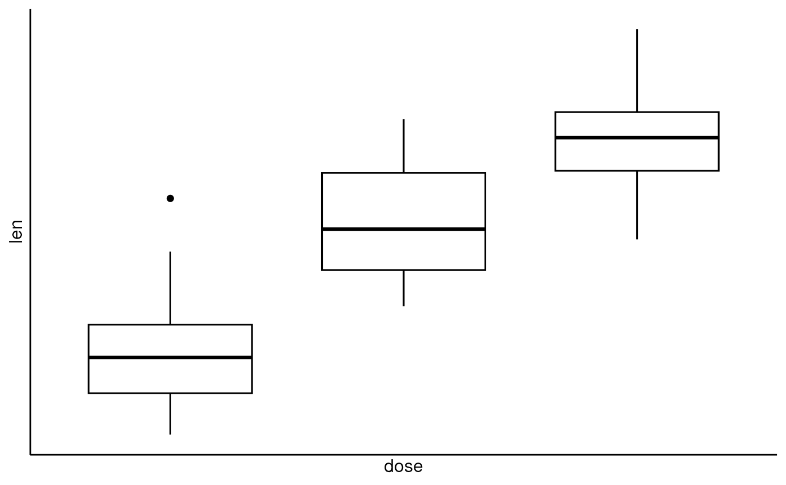
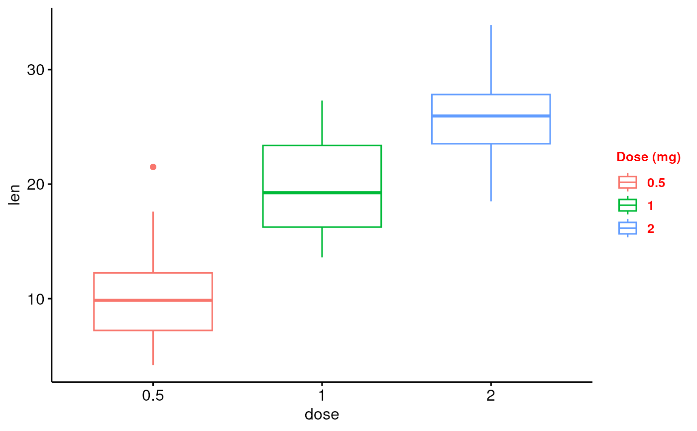

Graphical parameters
ggpar.RdGraphical parameters
ggpar(p, palette = NULL, gradient.cols = NULL, main = NULL, submain = NULL, caption = NULL, xlab = NULL, ylab = NULL, title = NULL, subtitle = NULL, font.main = NULL, font.submain = NULL, font.x = NULL, font.y = NULL, font.caption = NULL, font.title = NULL, font.subtitle = NULL, font.family = "", xlim = NULL, ylim = NULL, xscale = c("none", "log2", "log10", "sqrt"), yscale = c("none", "log2", "log10", "sqrt"), format.scale = FALSE, legend = NULL, legend.title = NULL, font.legend = NULL, ticks = TRUE, tickslab = TRUE, font.tickslab = NULL, font.xtickslab = font.tickslab, font.ytickslab = font.tickslab, x.text.angle = NULL, y.text.angle = NULL, xtickslab.rt = x.text.angle, ytickslab.rt = y.text.angle, xticks.by = NULL, yticks.by = NULL, rotate = FALSE, orientation = c("vertical", "horizontal", "reverse"), ggtheme = NULL, ...)
Arguments
| p | an object of class ggplot or a list of ggplots |
|---|---|
| palette | the color palette to be used for coloring or filling by groups. Allowed values include "grey" for grey color palettes; brewer palettes e.g. "RdBu", "Blues", ...; or custom color palette e.g. c("blue", "red"); and scientific journal palettes from ggsci R package, e.g.: "npg", "aaas", "lancet", "jco", "ucscgb", "uchicago", "simpsons" and "rickandmorty". Can be also a numeric vector of length(groups); in this case a basic color palette is created using the function palette. |
| gradient.cols | vector of colors to use for n-colour gradient. Allowed values include brewer and ggsci color palettes. |
| main, title | plot main title. |
| submain, subtitle | plot subtitle. |
| caption | plot caption. |
| xlab | character vector specifying x axis labels. Use xlab = FALSE to hide xlab. |
| ylab | character vector specifying y axis labels. Use ylab = FALSE to hide ylab. |
| font.main, font.submain, font.caption, font.x, font.y | a vector of length 3 indicating respectively the size (e.g.: 14), the style (e.g.: "plain", "bold", "italic", "bold.italic") and the color (e.g.: "red") of main title, subtitle, caption, xlab and ylab, respectively. For example font.x = c(14, "bold", "red"). Use font.x = 14, to change only font size; or use font.x = "bold", to change only font face. |
| font.title, font.subtitle | alias of font.submain and font.submain, respectively. |
| font.family | character vector specifying font family. |
| xlim, ylim | a numeric vector of length 2, specifying x and y axis limits (minimum and maximum), respectively. e.g.: ylim = c(0, 50). |
| xscale, yscale | x and y axis scale, respectively. Allowed values are one of c("none", "log2", "log10", "sqrt"); e.g.: yscale="log2". |
| format.scale | logical value. If TRUE, axis tick mark labels will be formatted when xscale or yscale = "log2" or "log10". |
| legend | character specifying legend position. Allowed values are one of c("top", "bottom", "left", "right", "none"). To remove the legend use legend = "none". Legend position can be also specified using a numeric vector c(x, y); see details section. |
| legend.title | legend title, e.g.: |
| font.legend | legend text font style; e.g.: font.legend = c(10, "plain", "black"). |
| ticks | logical value. Default is TRUE. If FALSE, hide axis tick marks. |
| tickslab | logical value. Default is TRUE. If FALSE, hide axis tick labels. |
| font.tickslab, font.xtickslab, font.ytickslab | Font style (size, face, color) for tick labels, e.g.: c(14, "bold", "red"). |
| x.text.angle, y.text.angle | Numeric value specifying the rotation angle of x and y axis tick labels, respectively. Default value is NULL. For vertical x axis texts use x.text.angle = 90. |
| xtickslab.rt, ytickslab.rt | Same as x.text.angle and y.text.angle, respectively. Will be deprecated in the near future. |
| xticks.by, yticks.by | numeric value controlling x and y axis breaks, respectively. For example, if yticks.by = 5, a tick mark is shown on every 5. Default value is NULL. |
| rotate | logical value. If TRUE, rotate the graph by setting the plot orientation to horizontal. |
| orientation | change the orientation of the plot. Allowed values are one of c( "vertical", "horizontal", "reverse"). Partial match is allowed. |
| ggtheme | function, ggplot2 theme name. Default value is theme_pubr(). Allowed values include ggplot2 official themes: theme_gray(), theme_bw(), theme_minimal(), theme_classic(), theme_void(), .... |
| ... | not used |
Examples
# Load data data("ToothGrowth") df <- ToothGrowth # Basic box plot # +++++++++++++++++++++++++++ p <- ggboxplot(df, x = "dose", y = "len") # Change the plot orientation: horizontal ggpar(p, orientation = "horiz")# Change main title and axis labels # ++++++++++++++++++++++++++++ ggpar(p, main = "Plot of length \n by dose", xlab = "Dose (mg)", ylab = "Length")# Title font styles: 'plain', 'italic', 'bold', 'bold.italic' ggpar(p, main = "Length by dose", font.main = c(14,"bold.italic", "red"), font.x = c(14, "bold", "#2E9FDF"), font.y = c(14, "bold", "#E7B800"))# Hide axis labels ggpar(p, xlab = FALSE, ylab = FALSE)# Change colors # ++++++++++++++++++++++ # Change outline colors by groups: dose p2 <- ggboxplot(df, "dose", "len", color = "dose") p2# Use brewer palette ggpar(p2, palette = "Dark2" )# Use grey palette ggpar(p2, palette = "grey")# Use scientific journal palette from ggsci package ggpar(p2, palette = "npg") # nature# Axis ticks, limits, scales # +++++++++++++++++++++++++ # Axis ticks labels and rotation ggpar(p, font.tickslab = c(14,"bold", "#993333"), xtickslab.rt = 45, ytickslab.rt = 45)# Hide axis ticks and tick labels ggpar(p, ticks = FALSE, tickslab = FALSE)# Axis scale ggpar(p, yscale = "log2")# Format axis scale ggpar(p, yscale = "log2", format.scale = TRUE)# Legends # ++++++++++++++++++ # Change legend position and title ggpar(p2, legend = "right", legend.title = "Dose (mg)", font.legend = c(10, "bold", "red"))